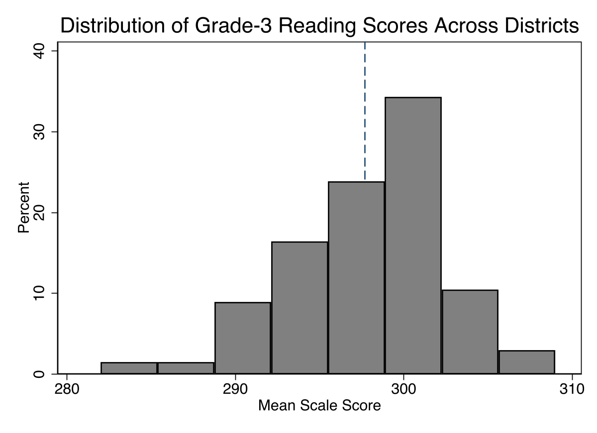
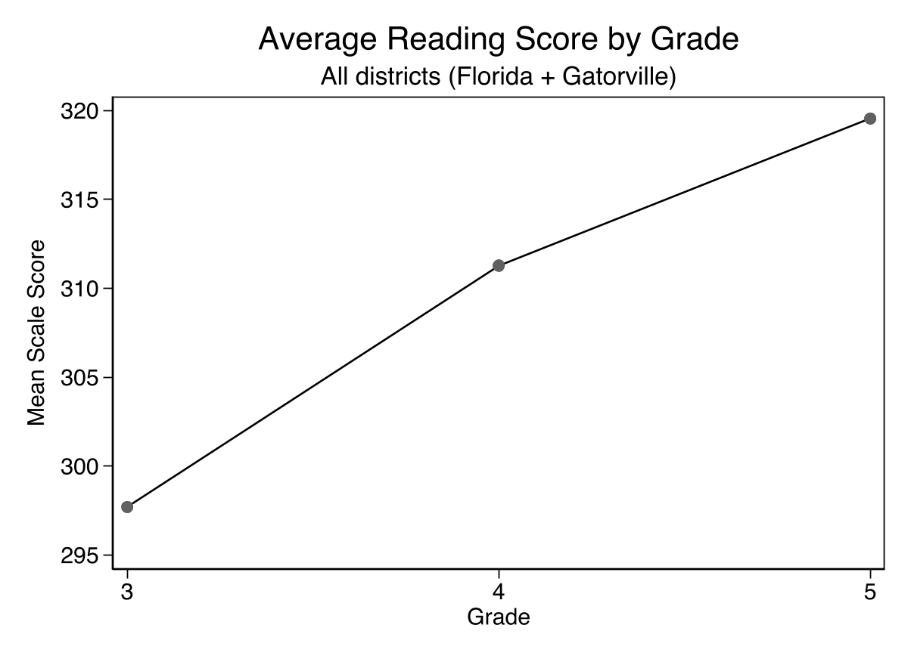
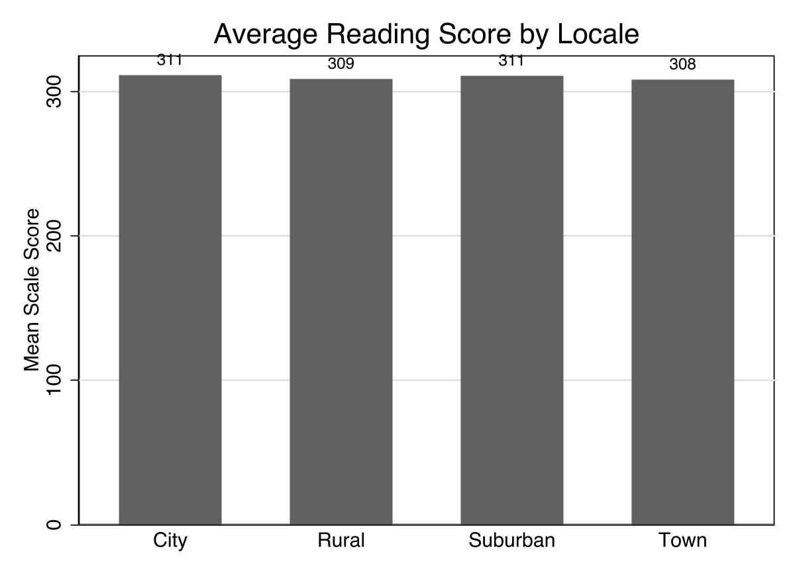
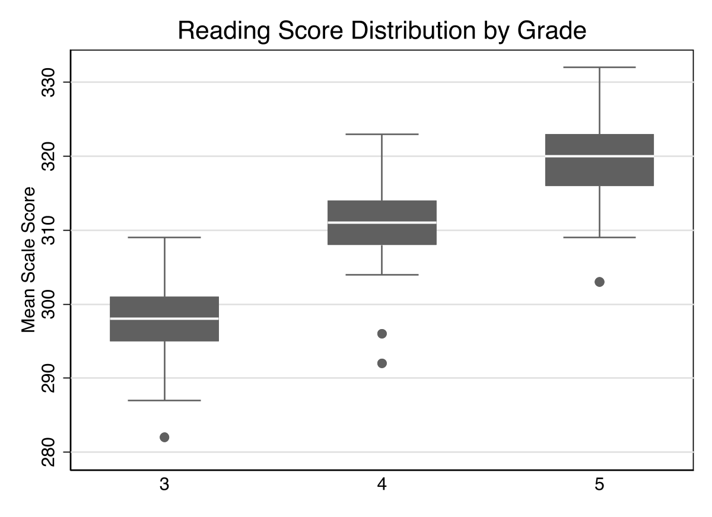
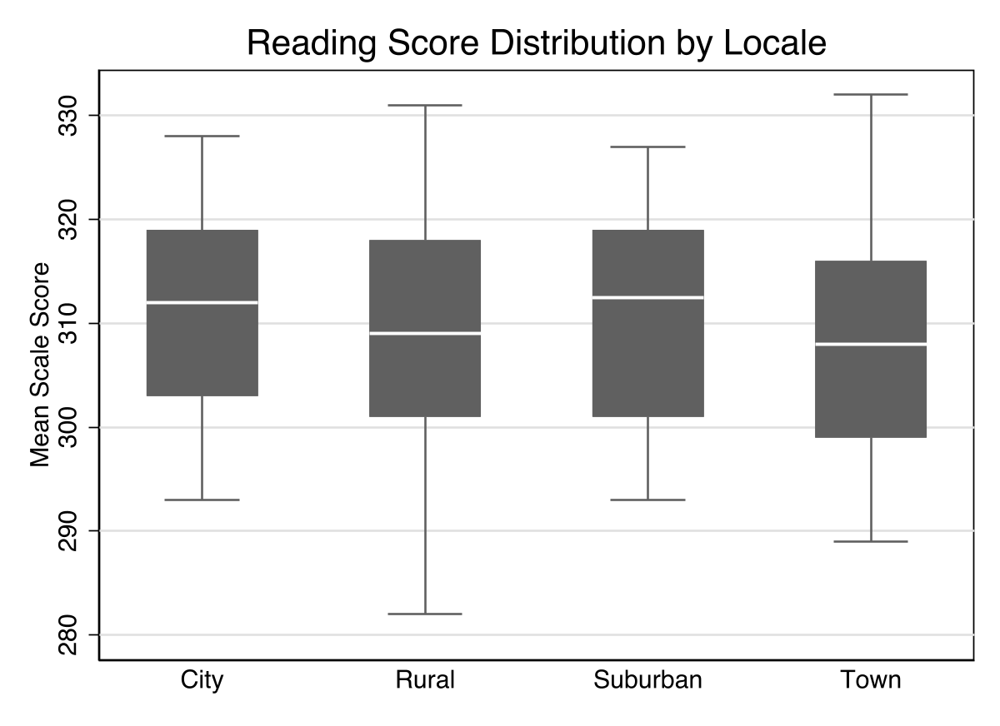
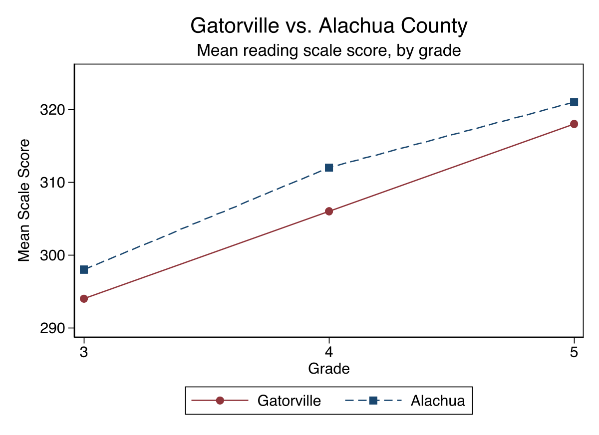
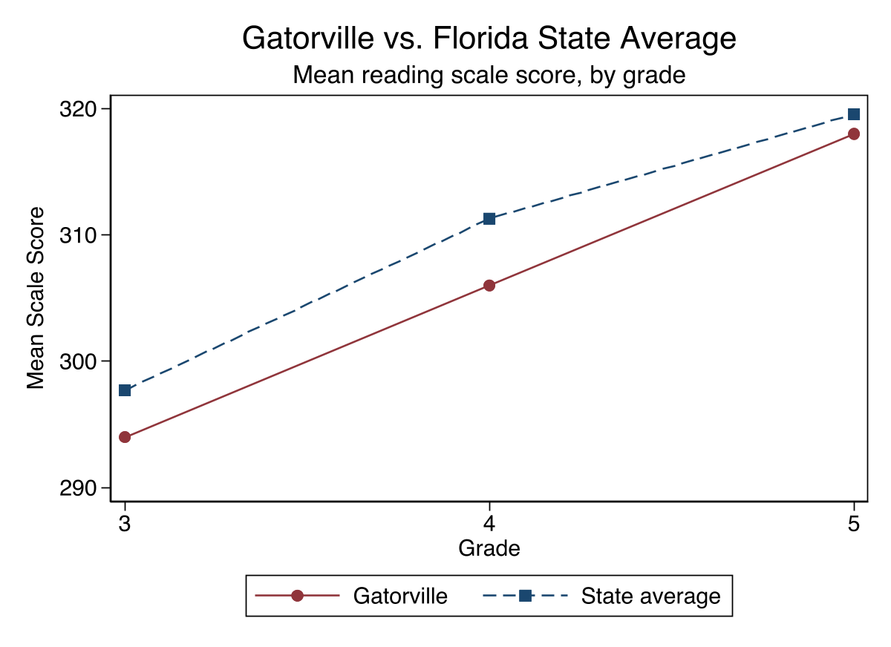

Univariate description: summarize one variable across all districts at once: its mean and its spread.
This week: compute those same statistics separately for each group, and compare, turning description into questions like “how does reading achievement differ across districts?”
tabstat tables
if to restrict a command to a subgroup.
summarize meanread if urban == 1
summarize meanread if urban == 0
Watch the double equals. A condition uses == (“is it equal to?”). A single = is used later in the course to create a variable. Mixing them up is a common error, so it is worth slowing down on.
if line per group.
bysort
bysort urban: summarize meanread
tabstat
tabstat meanread, by(urban) statistics(n mean sd)
The average is restricted to one group, Title I schools, so a condition is placed on which schools are included. That makes it a conditional mean.
The unconditional version would be the average attendance rate across all schools, with no group restriction. In Stata, the conditional version is summarize attendance if titlei == 1.
tabstat. Read the whole table, not just the averages.
tabstat meanread, by(locale) statistics(n mean sd)
locale | N Mean SD
---------+-------------------
City | 21 311.1 10.4
Rural | 57 308.5 11.2
Suburban | 78 310.7 9.9
Town | 45 308.1 9.7
---------+-------------------
Total | 201 309.5 10.3
tabstat meanread, by(high_poverty) statistics(n mean sd)
high_poverty | N Mean SD ---------------+------------------- Lower Poverty | 99 311.7 10.0 Higher Poverty | 102 307.4 10.2

collapse (mean) meanread, by(grade)twoway connected meanread grade
Here, across grades: average reading scores rise from about 298 at grade 3 to 311 at grade 4 to 320 at grade 5. Scale scores are built to be vertically comparable, so this upward climb is expected: students learn more content each year.
When there are only a few grades, a tabstat table is enough. With many periods, a line graph communicates the trend better.
tabstat table shows that suburban districts have a higher mean teacher salary but a much larger standard deviation than rural districts. What does the larger standard deviation tell you?
The standard deviation measures spread: how far values fall from their mean. A larger SD means suburban salaries vary more widely; some are well above the average and some well below.
It says nothing about the number of teachers (that is N), and the mean already tells us the average. Two groups can share the same mean and still differ sharply in spread, which is exactly why we report the SD alongside it.

graph bar (mean) meanread, over(locale)
By convention the y-axis starts at zero.
Because reading scores sit in the high 200s and 300s, the bars look almost identical: the differences are real but small relative to the score scale. That flatness is honest information, and it is also a reason a box plot or line graph sometimes communicates more.

graph box meanread, over(grade)
The line in the box is the median; the box is the middle 50% (25th to 75th percentile); the whiskers reach the extremes; dots are outliers.
Across grades the boxes step upward and barely overlap: a clear difference. How much the boxes overlap is the visual cue for how distinct the groups really are. Next, the same plot by locale.

graph box meanread, over(locale)
Same command, just over(locale). Compare these boxes with the grade box plot: look at how much they overlap and how close the medians sit.
Heavy overlap between the boxes means the locale groups are not very distinct on reading: knowing a district’s locale tells you little about its score. The gap in the means (308 to 311) is small relative to the spread within each group.
Contrast that with the grade box plot, where the boxes barely overlapped and the difference was clear. Overlap is the visual cue for how different groups are, and here it says “not much.”
meanread, lvl3plus, locale, poverty, and more.
if condition you already know. No merging required.

sort gradetwoway (connected meanread grade if districtname==“GATORVILLE”) (connected meanread grade if districtname==“ALACHUA”)
Grade 3: 294 vs. 298. Grade 4: 306 vs. 312. Grade 5: 318 vs. 321. Two lines, each just a conditional if plot. Sort by grade first so the line connects in order.
A leader seeing this would look first at grade 4, the widest gap.
The comparison tells us Gatorville is behind Alachua at grade 4. It does not tell us why (that would be a causal claim, B and D), and it does not tell us whether six points is a meaningful gap or one we might see by chance (C jumps to a conclusion).
Describing the difference is exactly what we can do now. Judging whether it is large enough to take seriously is the work of statistical inference, the focus of Module 5.

To compare Gatorville against all districts at once, build the state average for each grade with egen, then plot it against Gatorville:
bysort grade: egen state_avg = mean(meanread)
The story is the same as the Alachua comparison: Gatorville sits a little below the statewide average at every grade.